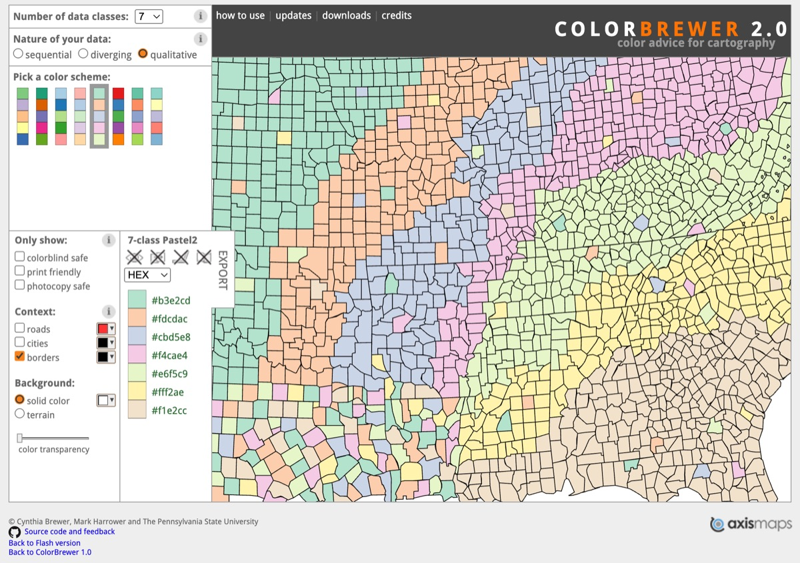
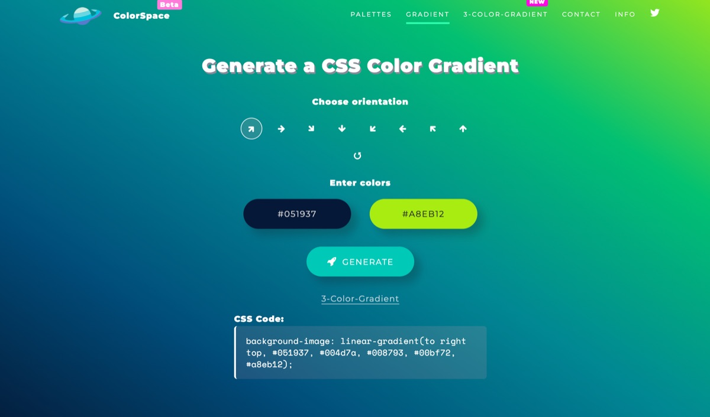
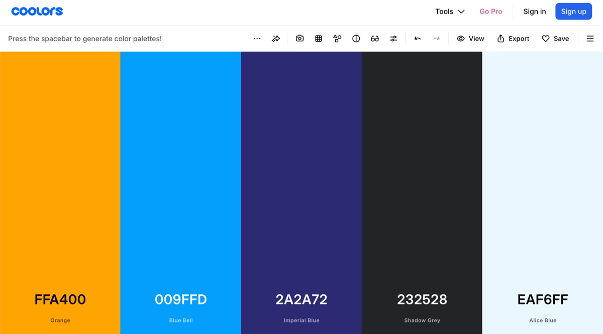

No.007
2026-01-18
SciViz Kit · 推文与教程
配色三件套：ColorBrewer / colorspace / Coolors
离散与连续怎么挑色板、色盲安全怎么保证、临时配色去哪里找现成的。
配色色盲安全ColorBrewer
配色工具三件套：按需求取板
选配色先分清数据语义：分类用 qualitative、大小用 sequential、正负偏离用 diverging。ColorBrewer 按这三类需求提供审校过的色板；colorspace 让你在感知均匀的色彩空间里调板并检查可读性；Coolors 则是临时要一组好看颜色时最快的路。



R 取板速查
两个最常用的 R 取板入口——ColorBrewer 的 RColorBrewer1 与感知均匀的 colorspace2：
library(RColorBrewer)
library(colorspace)
## 定性板：分类变量（组别 ≤ 8 时直接取，不要硬扩）
cols <- brewer.pal(8, "Set2")
## 顺序板：连续变量；组数超出预设时用插值扩展，而不是换板硬凑
pal <- colorRampPalette(brewer.pal(9, "YlGnBu"))(20)
## 发散板：正负偏离（如 log2FC）；colorspace 版本感知更均匀
div <- diverging_hcl(11, palette = "Blue-Red 3")
## 色盲安全自检：colorspace 的模拟视图，投稿前过一遍
specplot(div)注意 brewer.pal() 的上限是每块板的最大颜色数（定性板通常 8–9），需要更多颜色时应换顺序板插值或用 colorspace 生成，而不是在定性板上强行 colorRampPalette——插值出来的中间色未必保持色盲可分。
延伸阅读与参考文献
- Harrower M, Brewer CA. ColorBrewer.org: an online tool for selecting colour schemes for maps. The Cartographic Journal. 2003;40(1):27–37. doi:10.1179/000870403235002042
- Zeileis A, Fisher JC, Hornik K, Ihaka R, McWhite CD, Murrell P, Stauffer R, Wilke CO. colorspace: a toolbox for manipulating and assessing colors and palettes. Journal of Statistical Software. 2020;96(1):1–27. doi:10.18637/jss.v096.i01
SciViz Kit · 推文 No.007
2026-01-18